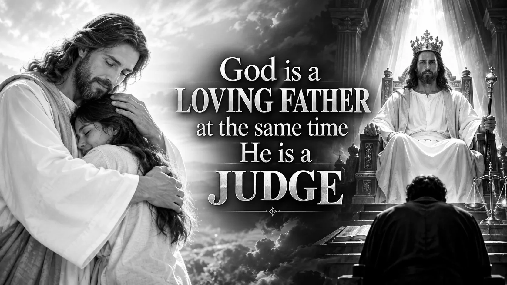
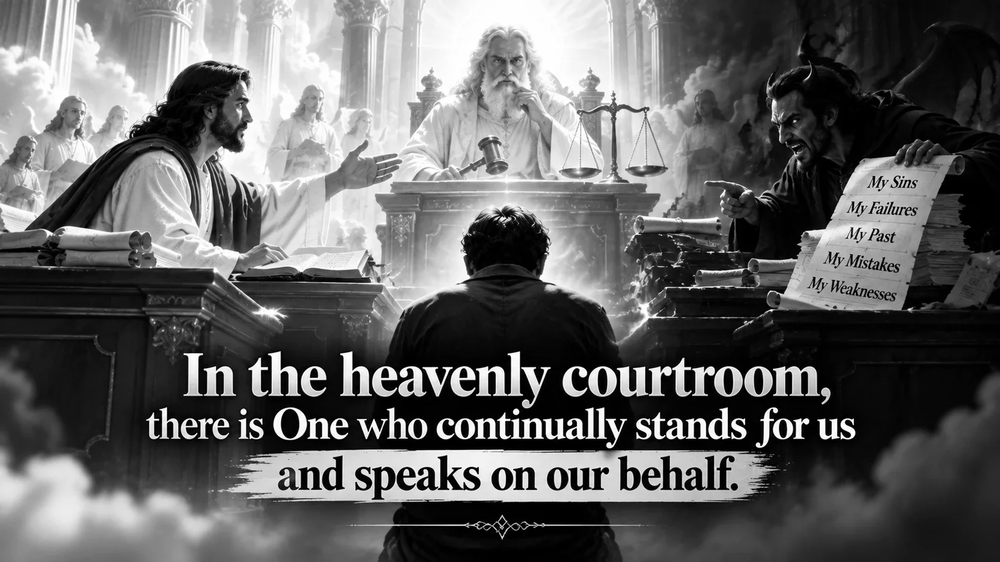
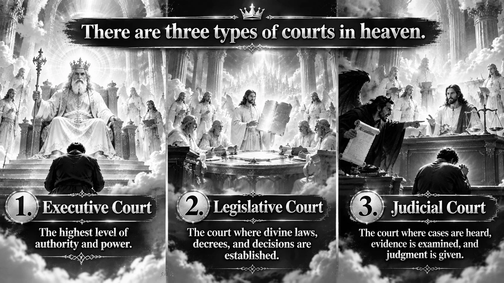
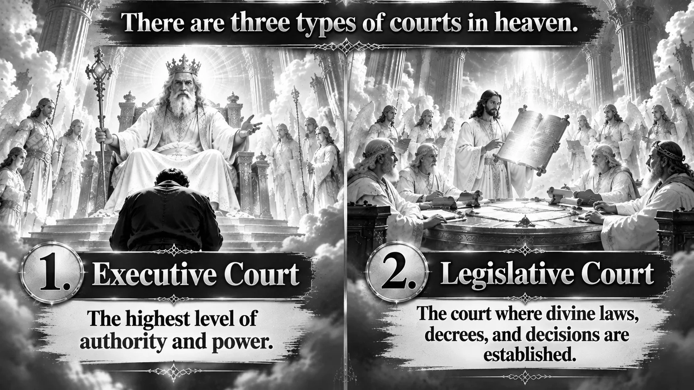
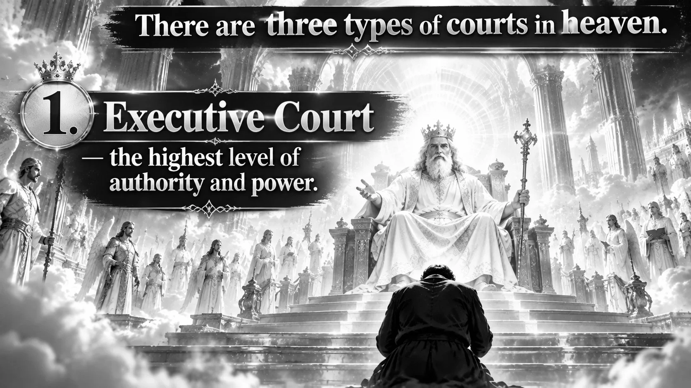
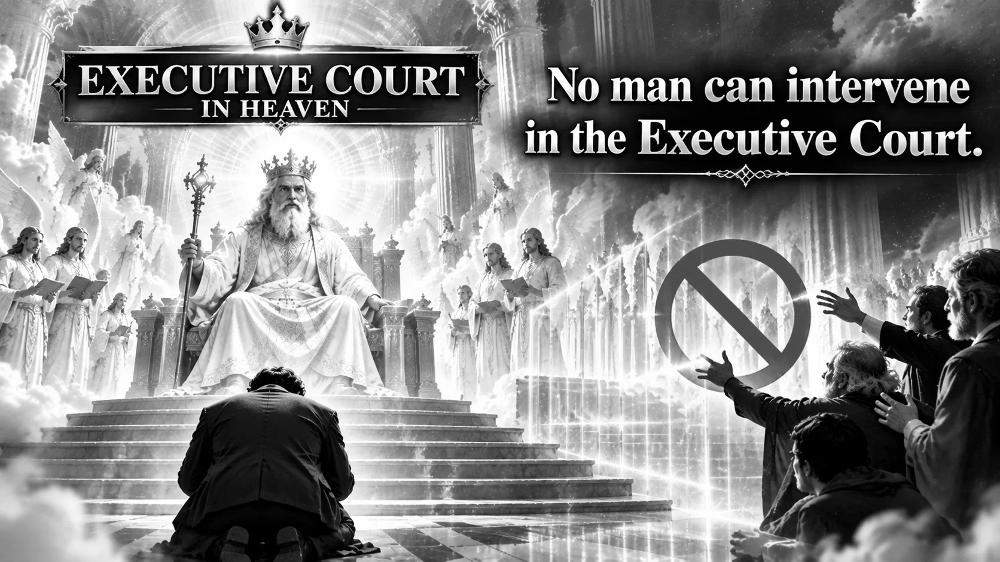
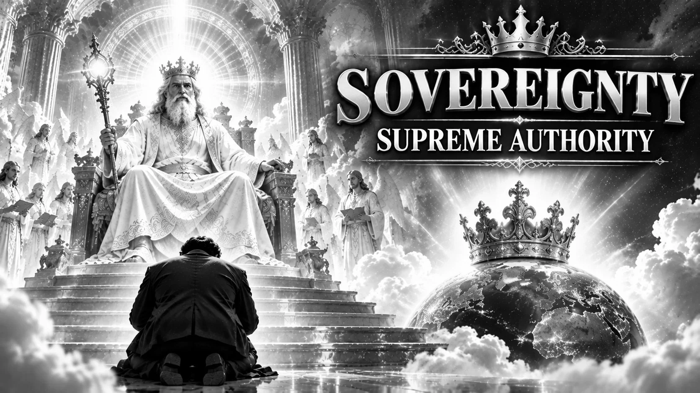
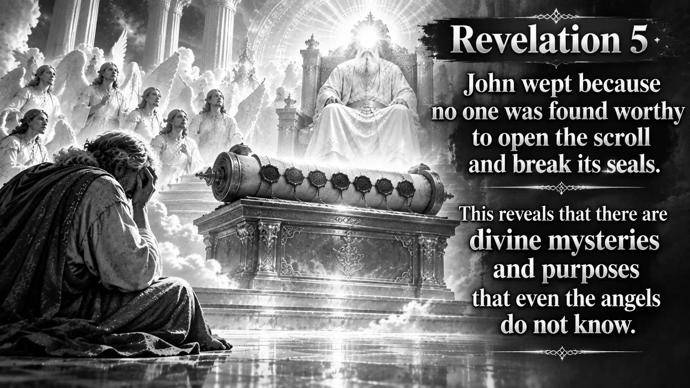
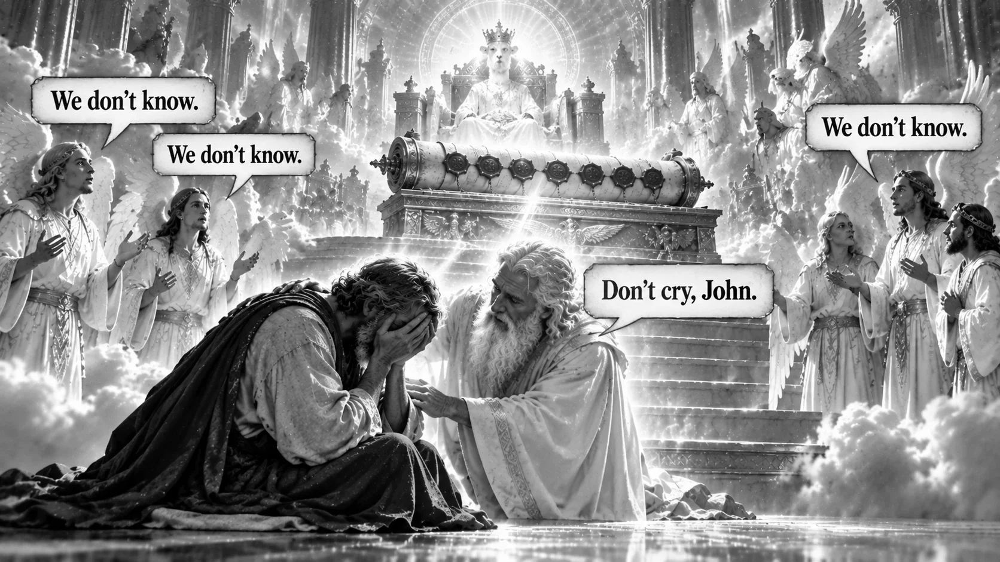

Why what is inside you is greater than you think
By Prophet Vinoth Kumar
How big is the salvation within you? Have you ever understood the greatness of your salvation?
Today, we think about great things. We speak grandly about ministry, calling, anointing, and spiritual accomplishments. But have we truly understood the greatness and magnitude of the salvation we have received?
There are two things we need to understand:
How great do you think your salvation is? How much value do you place on it?
Certainly, salvation is free for us. But behind salvation there is a great work. What is behind salvation? A great price.
It is free for you and for me. It stands apart, for us; it stands apart for me.
If you are not excellent in this place, your ministry will not be excellent either.
Behind salvation there is a great work. Understand this first.
There is a room. In that room I have my relationship with Him. At the same time there is also a court. The very One who is a Father to me is also the Judge here.

What happens in that court? One person pleads for me without ceasing. If there were only the One pleading for me, I would have no problem. But here there is also an advocate accusing me.

I am telling you some truth about the courts on the higher level. First is the Executive Court. Second is the Legislative Court, where the laws are; without laws there is no court. Third is the Judiciary Court, the criminal court.


The Executive Court, shall we say, is the place where orders are issued. No man can interfere there. What can a man do there? He cannot interfere at all. Full power rests with One alone. All your secrets are kept in that Executive Court.



In Revelation, John was watching: there was no one with the authority to break the seal. When he saw that no one could break it, what did John do? He wept. The angels are all there. Yet in heaven there are secrets even the angels do not know.


He lists what could separate us from the love of Christ: famine, hunger, this, that, and finally "angels." Even the angels of heaven cannot touch this. There is a boundary here. No one can come between me and Him in this relationship; I will not allow even an angel. An angel cannot come inside. If you are in a relationship with Him, an angel cannot come and interfere unless you allow it.
What blessing do angels not have? Salvation. Satan is also an angel, Lucifer. When he was created he was not created evil; by the freedom given to him he could act as he wished. Now, if that fallen angel came today and said, "Forgive me," what then? There is no forgiveness for him. Why? Because there is no salvation in him. It is only for you, the saved.
In that court there is a mark: the blood of Jesus. The Judge in that court looks at that. Who has it? Even an angel does not have it; you have it. Even angels cannot celebrate this.
Because you do not understand the salvation within you, our Christian life shakes; we stumble; some good things do not happen, some things do not come to pass. The salvation within you is greater than everything on this earth. Shall I say more? It is greater even than your calling, because the license for the calling is that salvation.
We have received a blessing angels never got. We fall again and again and rise again; we have a place in heaven. An angel wanted to become like Jesus, and he was judged. But we still want to become like Jesus. Isn't that so? He was judged; the devil was judged for what he wanted. Yet He celebrates you and me. Do you know why?
If an angel wants to become like Him, it is a crime; but for you to become like Him is no crime. We were created for that.
In the salvation within you are all the characteristics (the DNA) to become like Him. Why can an angel not become like Him? He does not have that salvation. Everything for you and me to become like Him is in that DNA of salvation. You and I, to live like Him, to become like Him, to speak like Him, to walk like Him, to think like Him.
[Prayer in tongues: "Attha rabba kadha re the ke riyaan thakka rabba hela remo siyantha"]
Let that DNA within us come out; let the seed within me come out.
[Prayer in tongues: "Hela rabba siyantha kanama"]
The salvation that makes sins red as crimson whiter than snow, say it, everyone, is within me. It makes me live a life higher than an angel's. A blessing unknown to angels; blessings angels do not have.
Up in heaven many angels cannot come even near Him; they stay at a distance. They do not have the privilege of going this close to God and seeing Him face to face. When Scripture asks what other nation has God this near, it includes the angels in that question. Amen, hallelujah!
This salvation, the power of salvation, we have not understood. For these 25 years I have gone into the prayer room and wept; I have wept for salvation. Only for salvation.
Did you see what angels do not have? Even angels must look at Him from a distance, say "Good morning" from afar, and praise. But He has a Closer Circle. Inside that Closer Circle are His secrets and His majesties.
The saints of the Bible who saw Him face to face went into His thoughts and saw them; entered His emotions and discovered them; discovered His heartbeat; took His hand and even found His pulse. Their name is: the Prophets.